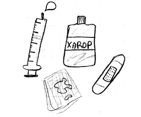

CIM-09-MC mobil

- Procediments i intervencions no classificats a cap altre lloc
- Operacions del sistema nerviós
- Operacions del sistema endocrí
- Miscel·lània d’altres procediments diagnòstics i terapèutics
- Operacions de l’orella
- Operacions de nas, boca i faringe
- Operacions de l’aparell respiratori
- Operacions de l’aparell cardiovascular
- Operacions dels sistemes hemàtic i limfàtic
- Operacions de l’aparell digestiu
- Operacions de l’aparell urinari
- Operacions dels òrgans genitals masculins
- Operacions dels òrgans genitals femenins
- Procediments obstètrics
- Operacions del sistema musculoesquelètic
- Operacions del sistema integumentari
- Miscel·lània de procediments diagnòstics i terapèutics